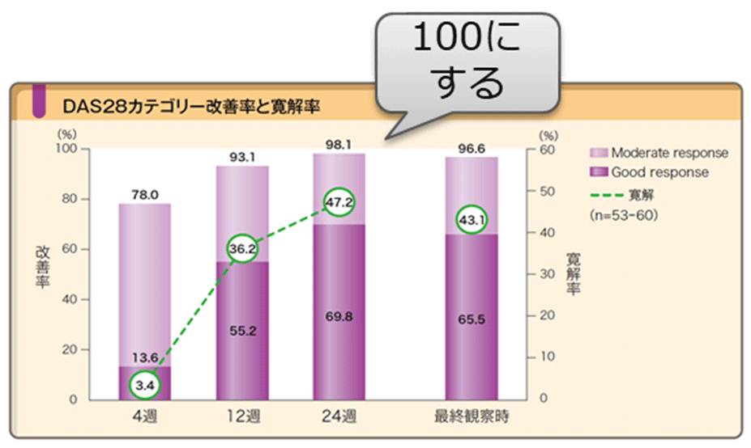
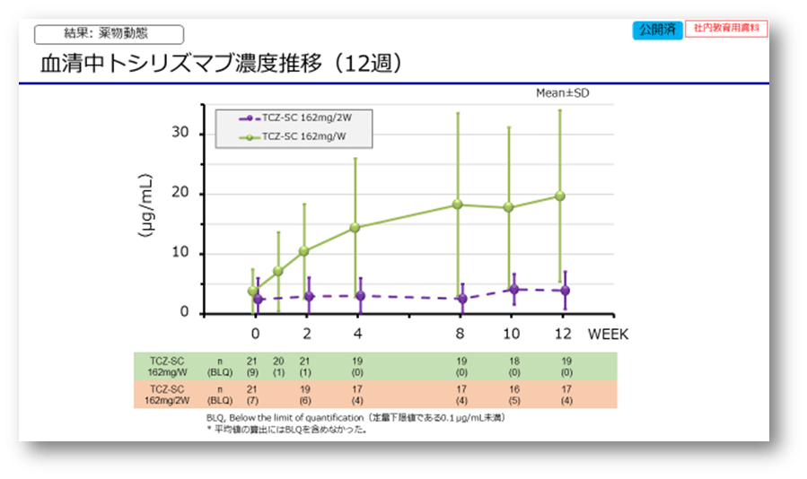

QW開発の経緯
- ＜オフィシャル＞
- ・現行の用法・用量で、大半は問題ないが、1割程度の患者において血清中TCZトラフ濃度がIL-6シグナル伝達を定常的に阻害できる濃度（1μg/mL以上）に至らず、TCZによる有効性が十分に発揮できない場合が依然としてある。
- ・血清中TCZ濃度がIL-6シグナル伝達をほぼ完全に阻害できる濃度に達していればCRPが0.3mg/dL以下となることが示されており、CRPで血清中TCZトラフ濃度を推察可能。
- ・これらの結果より、CRPが陰性化しない、すなわち血清中TCZ濃度が十分維持されていない効果不十分な患者に1週に投与間隔を短縮し1μg/mL以上の血清中TCZ濃度を定常的に維持することで有効性を発揮できないか
- ＜狙い＞
- ・効果が高いと言われているアクテムラでも、有効血中濃度に到達せず効果を発揮しない症例が全体の5-10％程度いる。
- ・最大用量レミケード10㎎、シンポニー100㎎、オレンシア、シムジアのローディング、ヒュミラ80㎎をもってしても100％は実現できていない。
- ・IL-6競合品シルクマブ、サリルマブで短縮は出てこない。

- ＜本音・コンセプト＞
- ・週1投与を可能とし有効率100％、寛解を目指すT2Tをアクテムラで実現させる（せたい）
- ・これで効かなければRAでない？（と本当に思う）
- ・IL-6競合品が出てきても、アクテムラに勝つことは絶対出来ない環境を構築しておく（きたい）
- ・患者さんのためにRA治療の最適化を目指す医療提供環境をアクテムラで作る（りたい）
